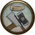

Merging Fleets
Fleets that are not large enough to be effective could be destroyed if attacked by a superior force, so it is prudent to merge any fragments together. Select one and right-click on another to move to and merge with it.

Ship Repair
A ship that has been damaged in combat must be repaired. In this instance move to a friendly port. To begin the repair process press the dedicated button that appears in the bottom left-hand corner of the screen. The crew will be replenished at the same time.